Acerca de FORXIME/2
El Origen del Monitoreo Digital
FORXIME es el inicio de todo. Fue concebido como la primera herramienta integral para el análisis de biodiversidad y monitoreo de especies de interés especial. Hoy, FORXIME representa el "principio" de nuestra suite tecnológica; su núcleo analítico reside ahora potenciado dentro de TANIA, pero mantiene su identidad como una plataforma robusta y accesible.
Diseñada originalmente para biólogos, ecólogos e investigadores de vida silvestre, FORXIME permite transformar datos brutos de cámaras trampa en conocimiento científico aplicable.
📊 Análisis de Comunidad
Cálculo de índices de Shannon, Simpson y Pielou. Análisis de similitud de Bray-Curtis para comparar sitios de muestreo.
🐾 Monitoreo de Especies
Seguimiento detallado de registros independientes y evaluación de abundancia relativa (RAI) por cada 100 días-trampa.
💡 Interpretación Ágil
Visualizaciones interactivas y reportes simplificados que cierran la brecha entre el campo y la estadística compleja.
📋 REQUISITOS DEL SISTEMA
VISTA PREVIA COMPLETA DE LA INTERFAZ
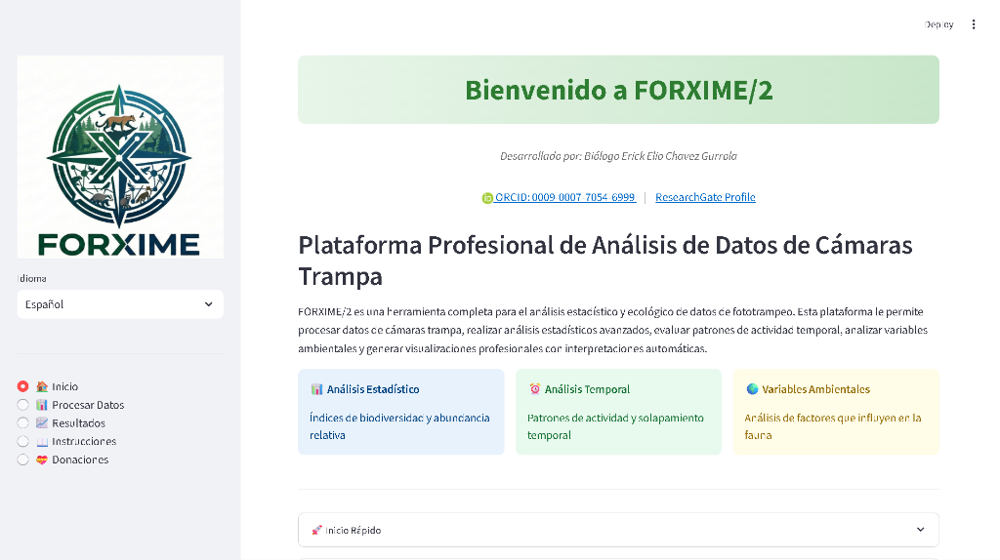
Interfaz integrada con perfiles científicos (ORCID/ResearchGate) y accesos directos.
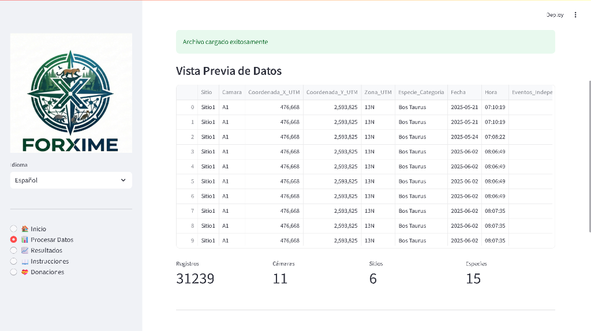
Resumen de registros y esfuerzo de muestreo procesados en milisegundos.
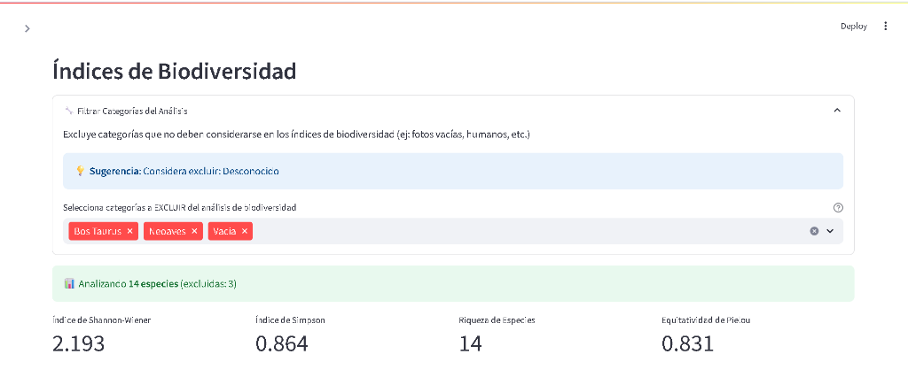
Shannon, Simpson y Riqueza con filtrado quirúrgico de categorías/especies.
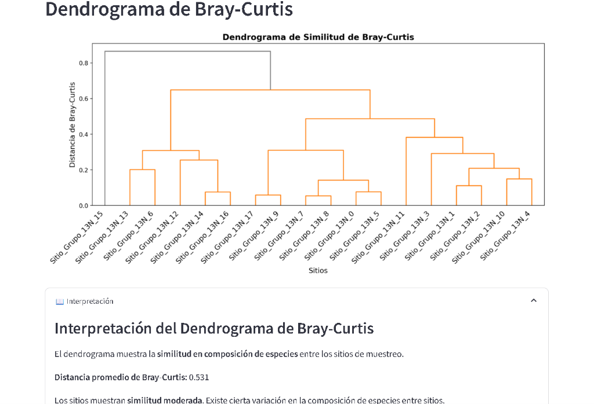
Análisis de Bray-Curtis para identificar agrupamientos ecológicos entre sitios.
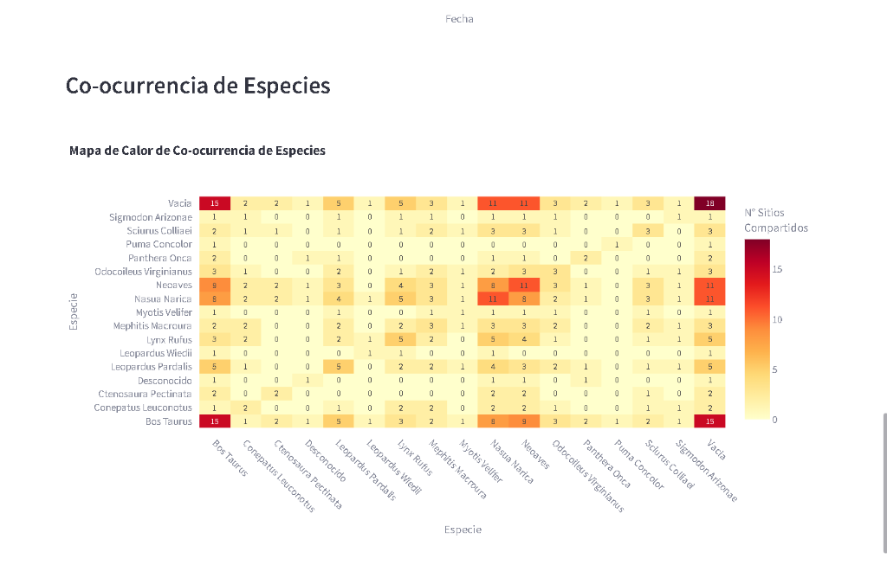
Mapa de calor de interacciones espaciales y frecuencia de encuentros compartidos.
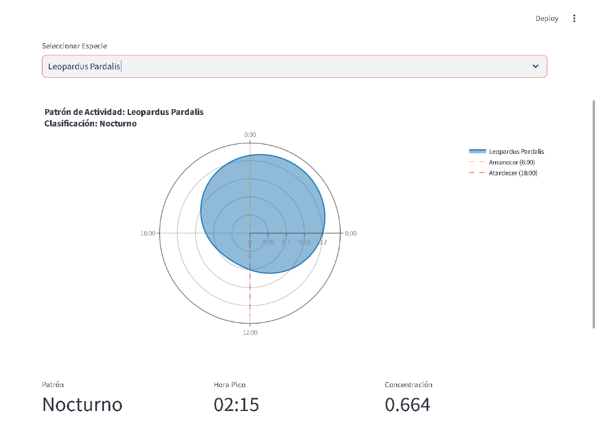
Diagramas polares de actividad horaria con clasificación (Nocturno/Diurno).
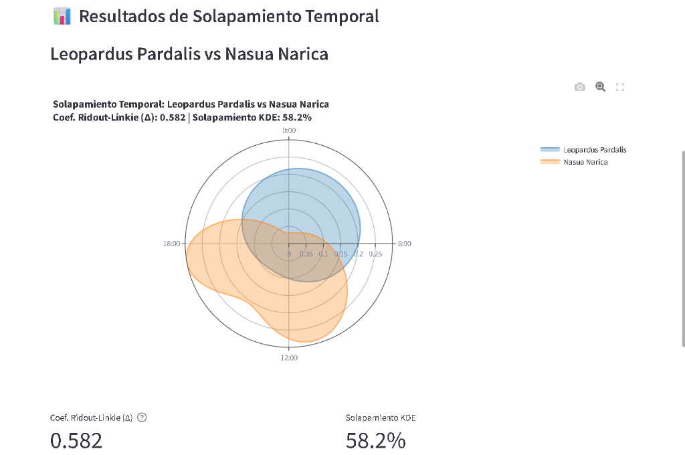
Comparativa de nichos temporales entre especies (ej. Depredador vs Presa).
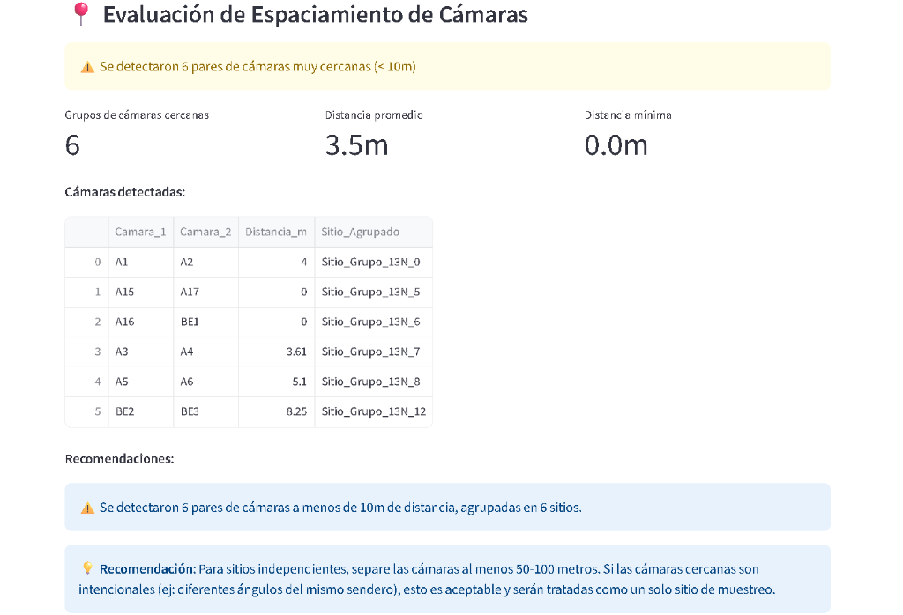
Validación geoespacial de distancias entre estaciones para asegurar independencia.
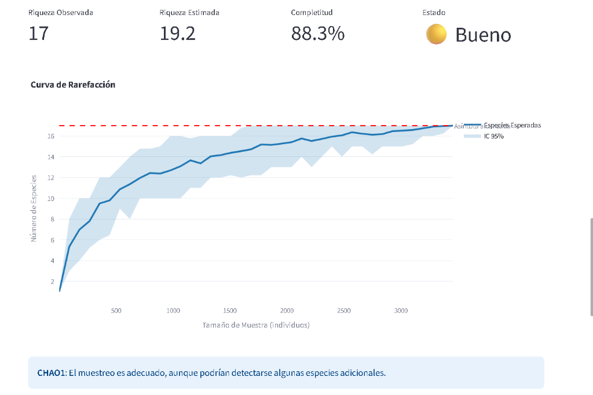
Evaluación de la completitud del muestreo y riqueza de especies esperada.
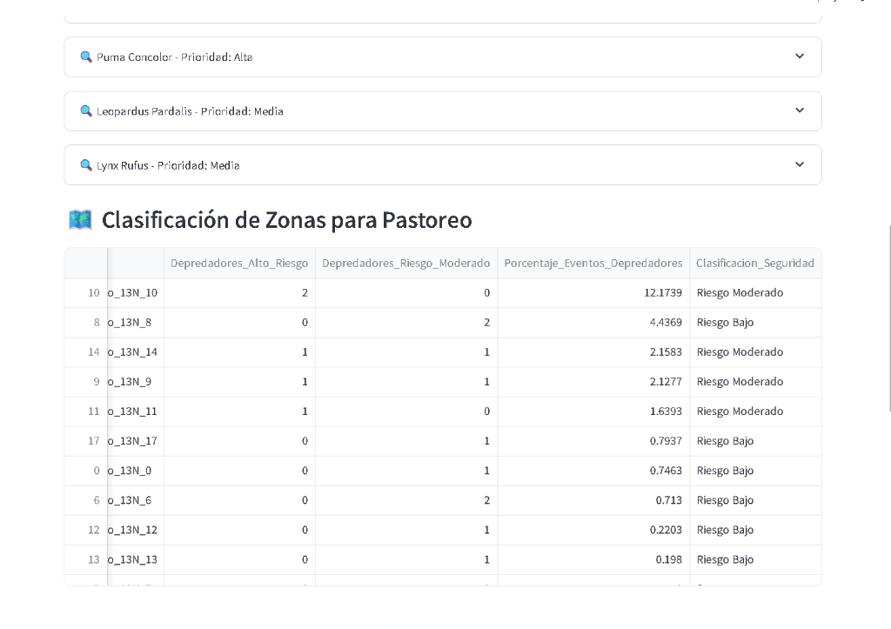
Clasificación de riesgo por presencia de depredadores para manejo ganadero.
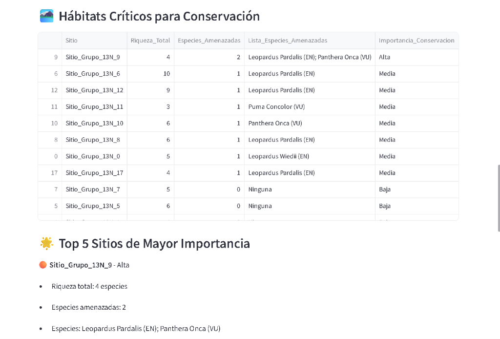
Identificación de sitios con mayor importancia para especies amenazadas.
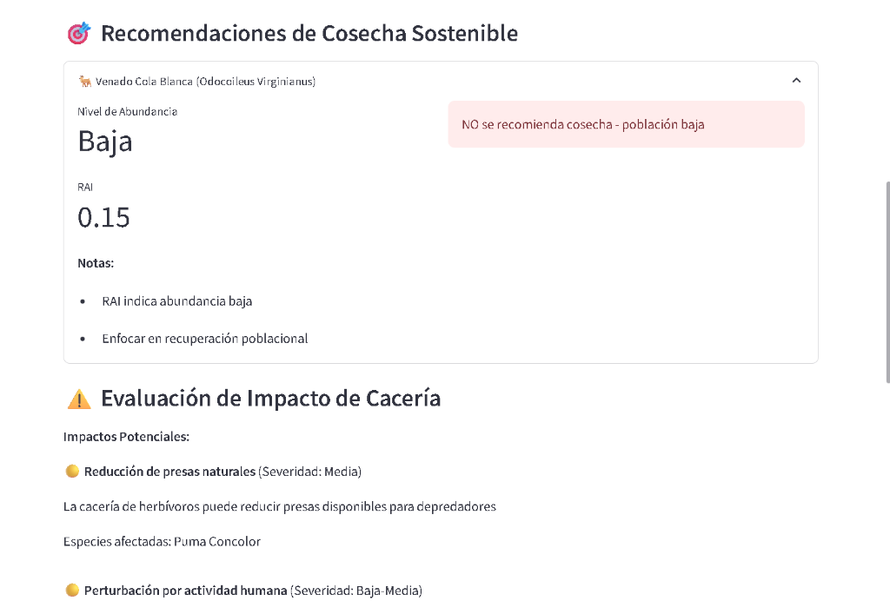
Recomendaciones de manejo cinegético basadas en abundancia relativa (RAI).
📦 DESCARGA E INSTALACIÓN
Accede a la versión oficial de FORXIME/2 para Windows. El código fuente, la documentación técnica y el instalador profesional se encuentran centralizados en nuestro repositorio oficial de GitHub.
El uso del software es completamente gratuito bajo la licencia MIT especificada en el repositorio.
Citar este Software
Si utilizas FORXIME en tu investigación científica o consultoría técnica, te pedimos que cites la plataforma utilizando el siguiente formato oficial para asegurar el rigor académico y el reconocimiento del software.